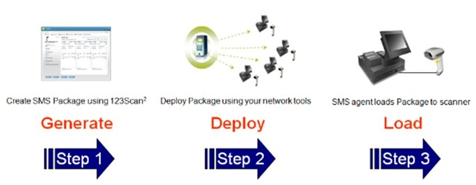

Overview

Figure 1: Steps in the SMS ProcessReducing Your Total Cost of Ownership
Lowering your total cost of ownership, the SMS Solution enables an enterprise to remotely manage their Zebra scanners. In addition to accessing asset tracking information, the SMS Solution can remotely set parameters and update firmware. Providing your enterprise maximum flexibility, the SMS Solution operates in an automated, unattended manner, no operator intervention is required.
Helpful Links
- To download the SMS agent, visit www.zebra.com/sms.
- To view a one minute video tour of the SMS in action, visit www.zebra.com/sms.
- To view all the SMS how-to videos, visit: www.zebra.com/ScannerHowToVideos.
Manage Asset Information Fleet Wide
The SMS also provides a conduit for any third party enterprise console to query and report fleet wide asset tracking information such as model number, serial number, date of manufacture, firmware version, configuration file name and parameter values. Providing additional flexibility, the SMS can operate as a service - always running and available, or as an application that can be invoked by a third party console command.
Configuration at the Point-of-Use
The SMS automates the process of loading a 123Scan generated SMS Package to a scanner. The SMS Package contains 123Scan generated scanner configuration file(s) loaded with parameters, scanner plug-in(s) containing the scanner's firmware and a load directive file with loading details such as date and time. Best of all, the SMS enables an enterprise to purchase off-the-shelf Zebra scanners and fully customize them to their needs at the point-of-use, no depot staging or operator intervention or bar code scanning required.
Zero Effort Configuration
SMS automatically establishes communication between the scanner and your host application hence operator intervention, pre-staging at a depot, scanning a bar code to establish communication, or console interaction is not required.
Replacing a scanner during store hours just before the holidays is not a problem. Just plug in the scanner and walk away. If the SMS is run as a Service, it automatically establishes communication with the scanner and downloads the appropriate content from the SMS Package to the scanner. No operator intervention is required.
Solution Architecture - Three Steps to Success
The SMS enables an enterprise to remotely update scanner firmware, configure scanner parameters, and gather asset tracking information. The SMS automates the process of loading firmware, and configuration files (parameter settings) to Zebra scanners. It also provides a conduit for third party network tools to query and report fleet wide asset tracking information, such as model number, serial number, date of manufacture, firmware version, configuration file name, and parameter values.
Remotely managing your scanner using the SMS is a three step process:
Step 1. Generate an SMS Package using 123Scan v5.0 (or newer).
Step 2. Deploy the SMS Package to your target (production) PC to the specified download folder on the scanner's terminal using your third party network tools. The network management console can also be used to query asset information from the SMS agent.
Step 3. On the target PC, the SMS agent loads the SMS Package to your scanner.
SMS solutions are available at no cost and require no licensing fees.
Supported Devices
For the compatible devices list, please visit following page.
https://www.zebra.com/us/en/support-downloads/software/utilities/scanner-management-service-for-windows.htmlVersion History
Version 4.02.0021 - 10/2026
- Added support to use Staging files to update firmware and configuration of scanners in a single step.
- Bug Fix - Fixed issue in executing default application-type package when SMS service is started from Windows services.
Version 4.02.0019 - 10/2025
- Bug Fix - Fixed issue with default SMS packages failing to be executed in both application and service modes.
Version 4.02.0018 - 07/2025
- Added support to maintain the SMS log file count based on values specified in the SMS package.
Version 4.02.0017 - 04/2024
- Updated behavior on SMS - Scanner now switches to the original host mode upon the execution of an SMS package containing only a firmware update.
Version 4.02.0015 - 01/2024
- Bug Fix - Fixed issue rarely seen by most people. In Application Mode (rarely used by most) fixed missing attributes in startup package when SMS is executed in Application mode. Resolved issue only seen at first operation.
Version 4.02.0013 - 10/2022
- SMS code base updated (migrated) to Visual Studio 2019 from Visual Studio 2017.
- Access to SMS Version Info - Modified how-to-access SMS Version info. Now read from registry key, Instead of SMS binary file.
Version 4.02.0012 - 07/2022
- Enhancement - At deployment of the SMS, when performing a Standard Installation, “Run as application” type default package is now copied into the Download folder.
Version 4.02.0011 - 04/2022
- Added configurable option to delete SMS package once the package has been loaded. Option located in the SMS package.
- Added configurable option to force configuration load from SMS package upon launch of the SMS, even if the configuration is already present on the scanner. Option located in the SMS package.
- Added support to manage scanners in IBM HH. This option is desired when the scanner is communicating with an OPOS/JPOS driver. Option located in the SMS package.
Version 4.02.0010 - 04/2020
- Updated the version of Visual C++ redistributable package from 2012 to 2017. Note redistributable package for 2012 is no longer included with the SMS.
- Bug Fix - On the MP7000, loading a configuration file through a SMS package no longer causes the configuration name to change to “Modified” on the scanner.
- Bug Fix - At deployment of the SMS, when performing a “Custom Installation” the correct service type default package is now copied into the Download folder.
- Removed Windows XP support.
Version 4.02.0005 - 11/2019
- Installation software enhanced to improve installation path security. Note this change does not impact or apply to SMS operation.
Version 4.02.0004 - 05/2019
- Fixed a bug in SMS which prevent ADF rules in DS8178 scanners from working correctly.
Version 4.02.0003 - 11/2018
- Cascaded scanners support like MP7000 with CSS and connected DS8178/cradle. All cascading scenarios now supported.
- Enhanced SMS by adding retry logic for failed firmware download and configuration push. Default = 3 attempts. Retry attempts are registry configurable.
- Enhances SMS logging.
Version 4.01.0000 - 11/2017
- SMS supports any SMS package created with any versions of 123Scan2 for SMS v4.1.
Version 4.00.0000 - 09/2017
- SMS optimized for faster performance. For example, at bootup, asset information can be retrieved within around 20 seconds versus around 5 minutes.
Version 3.01.0000 - 09/2016
- Added DS8108/DS8178, DS3608/DS3678, LI3608/LI3678 scanner support.
- SMS package must be generated using 123Scan² v4.2 or newer.
Version 3.00.0000 - 02/2016
- Rebranded Motorola SMS to Zebra SMS.
- Updated the version of Visual C++ redistributable package from 2005 to 2012.
- Security enhancements to address potential security vulnerabilities.
- Added support for Windows 10.
- Added a new default package in order to skip scanner actions till a new custom package is loaded.
- NOTE: SMS package must be generated using 123Scan2 v4.0.
Version 2.03.0000 - 07/2015
- Enable operation of SMS even if Windows login does not occur.
- Fixed scenario where parameter scanning disabled incorrectly by SMS package.
Version 2.02.0000 - 12/2014
- Intelligent firmware update - If target firmware already present on scanner, firmware load is not performed.
- Intelligent configuration update - If target config file name already present on scanner, config file parameters are not loaded. NOTE SMS package must be generated using 123Scan2 v3.5.
-
Log file - Asset tracking information enhanced.
- Now include config file name (cfg) and communication mode (mode) [2014-12-10, 18:32:14] ASSET INFO :: id=1 ; mode=USBHIDKB ; model=CR0078-SC10001WR ; sn=1204100501861 ; fw=NBCACAAN ; cfg=Front Reg ; dom=29MAR12
- Asset tracking information shall be disabled by default at launch of SMS (when run in service mode), IF no customer package is present in the download folder. Parameter is set in installation process.
Version 2.01.0000 - 10/2014
- Windows 8 support.
- Security enhancements to address potential security vulnerabilities.
Version 2.00.0000 - 08/2013
- Support for RS-232 (SSI) communication protocol (Scanner firmware support required).
- Support for statistics (Scanner firmware support required).
- MP6000 Scanner support without auxiliary scanners connected.
Version 1.00.0000 - 12/2012
- Initial release of the Scanner Management Service.